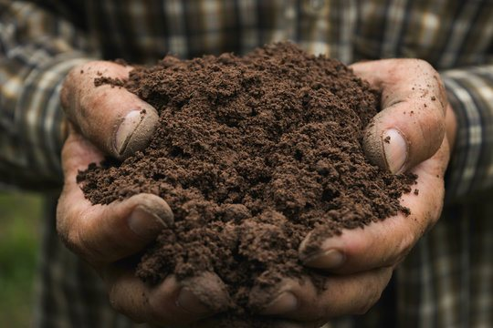

Agriculture & Food
The Soil Is Tired: Why Kitere Farmers Harvest Less Despite Using More Fertilizer
Hezbon Momanyi,a farmer and resident in Kitere,Rongo sub county, remembers 2013 clearly.Ome bag of DAP fertilizer gave him 28 bags of maize per acre. In he used 2½ bags and harvest 14 bags."The seed company cheated me,"he says.
The seed is not the problem.The soil is tired, acidic and hungry despite being fed.
According to the Kenyan Agricultural and Livestock Research Data data,62.5% most Kenyan soils are acidic with pH value below 5.5.The cause is as a result of continuous use of Diammonium Phosphate (DAP) without organic matter and without soil testing.
The science is simple.DAP is acidic and if used annually,it releases hydrogen that releases a low pH.In acidic soil below pH 5.5, critical nutrients like phosphorus, nitrogen and molybdenum become chemically locked by aluminum and iron.Roots cannot absorb them.You can pour three bags of fertilizer and then plant starves while surrounded fool.It is like giving ugali to a man whose jaws are wired shut.
Acidic soil also kills beneficial soil bacteria and earthworm,reduces water holding and make maze susceptible to grey leaf spot.

I spoke to Dr. Omondi Kwaye,a Botanical scientist who says that farmers treat farming as gambling,not science.
He advises a three step protocol before planting season,"Test soil at the county agriculture office for Kes.1,200-1500;if pH is low, broadcast one to tonnes of agricultural lime per acre at least before 14 days before planting;and incorporate 5 tonnes of well decomposed manure to decompose organic matter."
His trial shows this raises yield by 35-40% without buying extra fertilizer,and saves Kes.6,000 per acre in fertilizer costs.
This can be viewed by many as true development communication.Teaching science that saves money not just sell inputs.
Stop feeding a sick soil,test it first.